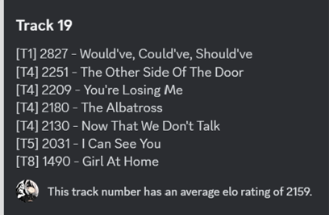

Tracks
See also: List of all tracks in TaylorBowl
Tracks refer to any song that can be in a TaylorBowl. There are currently 249 such tracks.
Criteria
Not every song by Taylor Swift is included. There are five criteria to determine what is included:
1. It must have been officially released.
2. It must credit Taylor Swift as a main artist (i.e. not a featured artist) and as a writer or co-writer.
3. It must not be an earlier iteration of a song that adheres to the above criteria (i.e. no demos).
4. It must be significantly lyrically unique relative to all other tracks that adhere to the above criteria.
5. It must not have, at any point, been released as a charity single.
For Criterion 1, any form of official release, including store-exclusive tracks, are counted. However, internally distributed demos, demo CDs, and other forms of release not intended for public consumption do not meet the criterion.
For Criterion 2, the first half refers to how tracks are named and credited. For example, Ed Sheeran's The Joker And The Queen (feat. Taylor Swift) credits Swift as a featured artist, and is thus not counted. The second half refers to credits, where Swift must be credited as a writer or co-writer on a given track. This has little bearing on most tracks as Swift writes or co-writes all tracks that she sings on.
For Criterion 3, this refers to demos, voice notes, and other similar pre-release versions. For example, the voice notes for Who's Afraid of Little Old Me?, The Black Dog, and Cassandra do not meet the criterion.
For Criterion 4, this often refers to remixes. For example, most of the many Anti-Hero remixes do not meet the criterion, but Anti-Hero (feat. Bleachers) does as it features a lyrically unique second verse.
For Criterion 5, this specifically refers to Ronan. This criterion was initially "It is not 'Ronan,' the 2012 charity single." as a means of respecting the song. In 2021, with the release of Ronan (Taylor's Version), this criterion was removed and Ronan was re-added. However, shortly after, public opinion suggested it be removed. As a result, the criterion was updated to its current wording and Ronan was removed from TaylorBowl again. (Main section: Tracks/Controversy)
1. It must have been officially released.
2. It must credit Taylor Swift as a main artist (i.e. not a featured artist) and as a writer or co-writer.
3. It must not be an earlier iteration of a song that adheres to the above criteria (i.e. no demos).
4. It must be significantly lyrically unique relative to all other tracks that adhere to the above criteria.
5. It must not have, at any point, been released as a charity single.
For Criterion 1, any form of official release, including store-exclusive tracks, are counted. However, internally distributed demos, demo CDs, and other forms of release not intended for public consumption do not meet the criterion.
For Criterion 2, the first half refers to how tracks are named and credited. For example, Ed Sheeran's The Joker And The Queen (feat. Taylor Swift) credits Swift as a featured artist, and is thus not counted. The second half refers to credits, where Swift must be credited as a writer or co-writer on a given track. This has little bearing on most tracks as Swift writes or co-writes all tracks that she sings on.
For Criterion 3, this refers to demos, voice notes, and other similar pre-release versions. For example, the voice notes for Who's Afraid of Little Old Me?, The Black Dog, and Cassandra do not meet the criterion.
For Criterion 4, this often refers to remixes. For example, most of the many Anti-Hero remixes do not meet the criterion, but Anti-Hero (feat. Bleachers) does as it features a lyrically unique second verse.
For Criterion 5, this specifically refers to Ronan. This criterion was initially "It is not 'Ronan,' the 2012 charity single." as a means of respecting the song. In 2021, with the release of Ronan (Taylor's Version), this criterion was removed and Ronan was re-added. However, shortly after, public opinion suggested it be removed. As a result, the criterion was updated to its current wording and Ronan was removed from TaylorBowl again. (Main section: Tracks/Controversy)
Matchups & Eligibility

An example of the 52 tracks with Recency values.
Not all tracks are eligible for a matchup at all times. There are two requirements: Recency and Eligibility.
Recency
After a bowl has concluded, both tracks are assigned a Recency value of 26. At the end of every subsequent TaylorBowl, this value decreases by 1 until it reaches 0, where it no longer exists. If a track has a Recency value greater than 0, it is not eligible to be in a TaylorBowl. The command !recenttracks or its shortened version !recent shows all 52 songs with Recency values.
Eligibility
There are 3 requirements to determine if a song is eligible to be in a matchup:
1. Non-Recency: The tracks in question must not have had a recent bowl. This is currently set to 26 Bowls.
2. Sufficient Closeness: The tracks must be within a certain amount of rating points to be considered close enough to have a bowl. This is currently set to 35 points.
3. Mutual Closeness: The two tracks' closest neighbor by rating must be the other track.
For requirement 1, see Recency.
For requirement 2 and 3, this refers to a track's Elo score (Main article: Elo). If two tracks' Elo are within 35 of each other, they may be eligible for a matchup. If two tracks' nearest song by Elo are each other, they may be eligible for a matchup. Both requirement 2 and 3 must be fulfilled to be eligible.
1. Non-Recency: The tracks in question must not have had a recent bowl. This is currently set to 26 Bowls.
2. Sufficient Closeness: The tracks must be within a certain amount of rating points to be considered close enough to have a bowl. This is currently set to 35 points.
3. Mutual Closeness: The two tracks' closest neighbor by rating must be the other track.
For requirement 1, see Recency.
For requirement 2 and 3, this refers to a track's Elo score (Main article: Elo). If two tracks' Elo are within 35 of each other, they may be eligible for a matchup. If two tracks' nearest song by Elo are each other, they may be eligible for a matchup. Both requirement 2 and 3 must be fulfilled to be eligible.
Attributes
Every track is assigned a Tier and an Album, and most are assigned a Track Number.
Tracks are grouped based on Elo into 11 Tiers, with Tier 0 containing the highest Elo tracks and Tier 10 containing the lowest (Main article: Tiers).
If a track is assigned any of Swift's 11 studio albums, it is also assigned a Track Number based on its position in the tracklist. For example, Clean is assigned as track 13. Due to different versions of albums, there may be tracks that share the same position in the tracklist. In these cases, whenever possible these disputes are resolved such as with THE TORTURED POETS DEPARTMENT's tracks The Manuscript, The Bolter, The Albatross, and The Black Dog. All 4 were originally track 17 on their respective variants. However, with the release of THE TORTURED POETS DEPARTMENT: THE ANTHOLOGY, they each received unique track numbers. However, not all conflicts are resolved. For example, You're Losing Me and Would've Could've Should've are both track 19 on Midnights (The Late Night Edition) and Midnights (The Til Dawn Edition) respectively. In these cases, both are assigned track 19.
Tracks are grouped based on Elo into 11 Tiers, with Tier 0 containing the highest Elo tracks and Tier 10 containing the lowest (Main article: Tiers).

If a track was at any point released on a particular album, it is considered part of that album. Thus, If This Was A Movie is considered a Speak Now track, and Sweeter Than Fiction is considered a 1989 track. Tracks that were never released with an album, such as Christmas Tree Farm, are assigned No Album. Tracks released on EPs are also assigned No Album, such as I Heart ? and Safe & Sound.
Track 19s. Note the inclusion of both You're Losing Me and Would've Could've Should've.
If a track is assigned any of Swift's 11 studio albums, it is also assigned a Track Number based on its position in the tracklist. For example, Clean is assigned as track 13. Due to different versions of albums, there may be tracks that share the same position in the tracklist. In these cases, whenever possible these disputes are resolved such as with THE TORTURED POETS DEPARTMENT's tracks The Manuscript, The Bolter, The Albatross, and The Black Dog. All 4 were originally track 17 on their respective variants. However, with the release of THE TORTURED POETS DEPARTMENT: THE ANTHOLOGY, they each received unique track numbers. However, not all conflicts are resolved. For example, You're Losing Me and Would've Could've Should've are both track 19 on Midnights (The Late Night Edition) and Midnights (The Til Dawn Edition) respectively. In these cases, both are assigned track 19.
Viewing

A user finding the Elo of two songs by name and ranking.
Individual tracks and their Elo can be found using the command !elo. You may either do !elo name or !elo #position to find a given track.
Multiple tracks and their Elo can be found based on Album or Track number using the commands !album name and !track number respectively. They are listed from highest to lowest Elo.
Multiple tracks and their elo can be found based on Tier using the command !tier number. They are listed from highest to lowest Elo.
Multiple tracks and their Elo can be found based on Album or Track number using the commands !album name and !track number respectively. They are listed from highest to lowest Elo.
Multiple tracks and their elo can be found based on Tier using the command !tier number. They are listed from highest to lowest Elo.
Controversy
The following section is a retelling of history. The TaylorBowl Wiki and its contributors do not necessarily share the stance of any opinions presented below.
There have been a number of discussions, some of which people have felt very strongly about, over the inclusion or exclusion of certain songs.
Ronan
At its conception in July 2020, Ronan was part of TaylorBowl's tracks. Almost a year later in June 2021, the criterion “It is not 'Ronan,' the 2012 charity single.” was added and Ronan was removed. Later that year, in November 2021, Red (Taylor's Version) was released with Ronan (Taylor's Version) as track 21. With its release, Ronan was re-added to TaylorBowl's tracks when Season 6 began in February 2022, along with the removal of Criterion 5. However, after public backlash and heated discussions regularly occurring because of its inclusion, it would be removed again barely 24 hours after the Season started, and Criterion 5 was re-added with its current wording.
The debate of whether Ronan should be included centers around the purpose of the song. Those arguing for its exclusion cite the extremely personal nature of the song and its significance to someone other than Swift, along with the attitude of TaylorBowl participants often expressing dislike for songs as disrespectful to the song. Some go further to argue that using such a song in a ranking game diminishes its significance.
Those disagreeing cite other songs such as Soon You'll Get Better, epiphany, and marjorie as other examples of songs with deeply personal meanings, arguing that just because a song is personal does not mean it is exempt from ranking. In response, a small portion of those arguing for Ronan's exclusion also pushed for the removal of those songs. This did not occur, likely due to the subjective nature of determining a song's personal importance.
The resolution of using Ronan's original charity single status as a determiner was likely to have an objective criterion on the purpose of the song. Those supporting the move to exclude Ronan using this criterion suggest that songs for “good purposes” such as charity should not be diminished by a ranking game.
The debate of whether Ronan should be included centers around the purpose of the song. Those arguing for its exclusion cite the extremely personal nature of the song and its significance to someone other than Swift, along with the attitude of TaylorBowl participants often expressing dislike for songs as disrespectful to the song. Some go further to argue that using such a song in a ranking game diminishes its significance.
Those disagreeing cite other songs such as Soon You'll Get Better, epiphany, and marjorie as other examples of songs with deeply personal meanings, arguing that just because a song is personal does not mean it is exempt from ranking. In response, a small portion of those arguing for Ronan's exclusion also pushed for the removal of those songs. This did not occur, likely due to the subjective nature of determining a song's personal importance.
The resolution of using Ronan's original charity single status as a determiner was likely to have an objective criterion on the purpose of the song. Those supporting the move to exclude Ronan using this criterion suggest that songs for “good purposes” such as charity should not be diminished by a ranking game.
Renegade
Renegade was a song released by the band Big Red Machine featuring Taylor Swift. By the Criteria, it is thus not included in TaylorBowl. However, for a short time after its release, a small number of TaylorBowl participants argued that, despite Swift being a featured artist, her performance of the majority of its vocals should qualify it for TaylorBowl.
However, it has never been added in strict adherence to the Criteria.
However, it has never been added in strict adherence to the Criteria.
Version 2.1